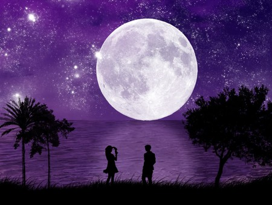

Give me three kisses, oh moon-faced beloved, I said. She replied, Who in this world has been kissed by the moon?
The radiance of your face increases in the night, I said. She replied, It is the moon that lights up the night sky.
I have never seen you stay motionless in one space, I said. She replied, It is the eclipse of the moon that bewildered mankind.
Mu'izzi Nishaburi (1048 CE - 1125 CE)
